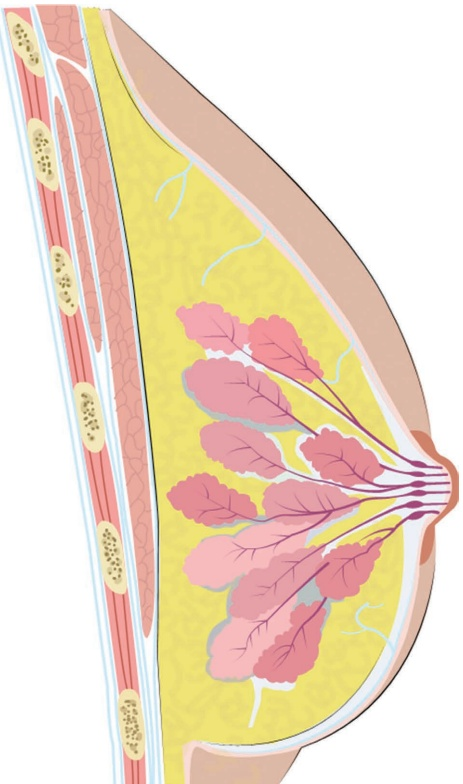
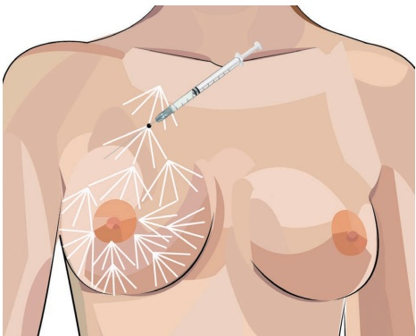
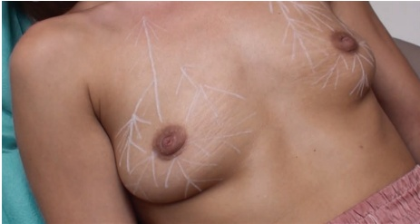
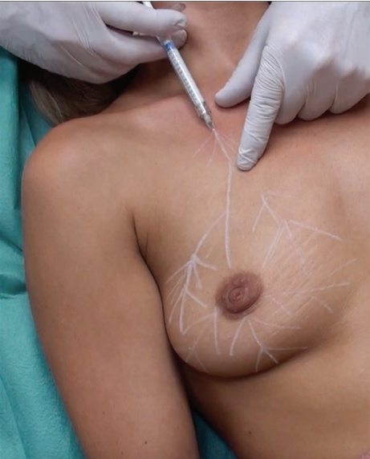
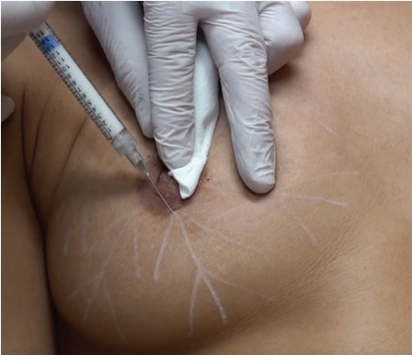
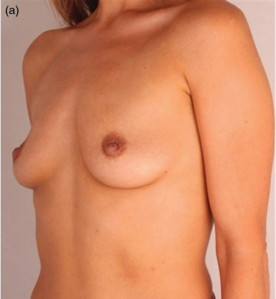
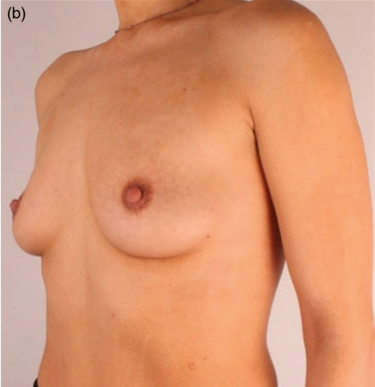

30 颈部、胸部和腹部：乳房皮肤再年轻化
乳房颈部、胸部和腹部皮肤再活力化
PIETER SIEBENGA 和 JANI VAN LOGHEM
30.1 引言
注射填充剂用于乳房的情况不常见，但高倍稀释的羟基磷灰石钙（CaHA）可用于治疗乳房年龄相关的皮肤改变。乳房的年龄相关改变具有重要意义，因为乳房在解剖学上由覆盖其上的皮肤和乳腺内的筋膜支持 [1,2]。皮肤功能和外观的变化与胶原蛋白、弹性蛋白和水合作用的丢失有关 [3,4]，并导致乳房下垂 [5-7]。此外，由于更年期变化，乳房的成分也会发生改变（例如，乳腺实质退行和腺上皮丢失 [8]），影响乳房的形状，进而影响皮肤的外观。使用高倍稀释的 CaHA 治疗皮肤可由于早期描述的新生胶原形成、新生弹性蛋白生成和新血管生成而实现皮肤的再活力化 [9]，这将导致皮肤的紧致和提升；使上极部更突出；并使下极部、腺体和脂肪收缩。
30.2 解剖学危险区域
注射应在皮下层进行。应注意避免进入腺内或进入供应乳头的神经血管束（图 30.1）。
30.3 皮肤再活力化针技术
30.3.1 分步技术
有关注射定位，参见图 30.2。
-
对乳房进行消毒。
-
从锁骨中线垂直画线至乳晕，标记乳房的上极部，并扩展成多重逆行扇形技术方法的图案（图 30.3）。
-
在乳晕的直接下方，画出三条辐线将下极分成相等部分，并标记进行扇形技术。
-
使用 1:1 至 1:3 的高倍稀释 CaHA 和 27G、50.8 mm 的锐针。
-
从锁骨中点开始。
-
向注射方向拉伸皮肤以控制针头的正确深度（图 30.4）。
-
插入针头并推进，直到整个针头位于皮下层。确保针头

保持在覆盖乳房的浅筋膜的前方，并在治疗过程中保持在乳晕之外（图 30.5）。
-
缓慢注射每次逆行注射约 0.05–0.1 mL。
-
重复操作直到两侧乳房都得到治疗。每处理 10 cm2 面积使用约 1.5 mL 的高倍稀释 CaHA。


有关术前和术后效果以及应用技术，请参阅图 30.6。
30.4 术后护理
可进行轻柔按摩以达到均匀分布，但如果采用高倍稀释的 CaHA 低剂量逆行线性丝技术，则无需按摩。
应在三到四个月后评估效果。如有必要，届时可考虑进行补充治疗。作为一般指南，每侧乳房应注射两到三支 1.5 mL 的 CaHA 产品。
30.5 实现最佳效果的附加治疗
乳房真皮填充剂注射并不常见。希望进行乳房提升（乳房成形术）或乳房增生的女性倾向于手术，这需要植入假体或自体脂肪移植。尽管可能性很小，但


有观点认为 CaHA 治疗可能与患乳腺癌有关，一些医生建议出于法律原因在治疗前进行乳房X线摄影或超声检查。


参考文献
[1] J. R. Steele et al., Sports Bra Fitness. Wollongong: Breast Research Australia, Biomechanics Research Laboratory, University of Wollongong, 2008.
[2] A. Gefen, B. Dilmoney, “Mechanics of the normal woman’s breast,” Technol Health Care, vol. 15, no. 4, pp. 259–271, 2007.
[3] J. Uitto, “The role of elastin and collagen in cutaneous aging: Intrinsic aging versus photoexposure,” J Drugs Dermatol, no. Suppl 2, pp. s12–s16, 2008.
[4] C. Escoffier et al., “Age-related mechanical properties of human skin: An in vivo study,” J Investig Dermatol, vol. 93, no. 3, pp. 353–357, 1989.
[5] Y. Machida, M. Nakadate, “Breast shape change associated with aging: A study using prone breast magnetic resonance imaging,” Plast Reconstr Surg Glob Open, vol. 3, no. 6, p. e413, 2015.
[6] N. I. Elsahy, “Correction of abnormally high nipples after reduction mammaplasty,” Aesthetic Plast Surg, vol. 14, no. 1, pp. 21–26, 1990.
[7] D. E. McGhee, J. R. Steele, “How do respiratory state and measurement method affect bra size calculations?,” Br J Sports Med, vol. 40, no. 12, pp. 970–974, 2006.
[8] R. G. Abramson et al., “Age-related structural and functional changes in the breast: Multimodality correlation with digital mammography, computed tomography, magnetic resonance imaging, and positron emission tomography,” Semin Nucl Med, vol. 37, no. 3, pp. 146–153, 2007.
[9] Y. A. Yutskovskaya, E. A. Kogan, "Improved neocollagenesis and skin mechanical properties after injection of diluted calcium hydroxylapatite in the neck and décolletage: A pilot study," J Drugs Dermatol, vol. 16, no. 1, pp. 68–74, 2017.